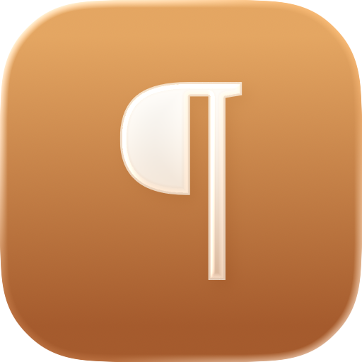

The millionaire who blamed avocado toast had his grandfather’s money.
Ran as “Millionaire: if you stopped buying avocado toast, you could afford a home”

The LedeA research desk for everything you save
Save anything worth reading. The Lede reads it closely, unburies the real story, files it by beat, and writes the strongest honest case the piece can make. Your queue becomes a magazine, not a pile of tabs.
As it ran
A Glass of Red Wine Equals an Hour at the Gym, New Study Finds
Unburies to
The “wine equals a workout” study was run on rats.
Coming to iPhone · opening in waves
Just your invite when a wave opens. No list-sharing, no noise. The privacy policy covers it.
Every story comes back renamed for what it’s actually about and shelved on its beat. The queue reads like sections you pick by mood.
Ran as “Millionaire: if you stopped buying avocado toast, you could afford a home”
Ran as “London Is Still Paying Rent to the Queen on a Property Leased in 1211”
Ran as “Scientists Have Reached a Key Milestone in Reversing Aging”
The Lede
Mon 16 Jun · 3 unread · re-framed
The “wine equals a workout” study was run on rats.
Ran as “A Glass of Red Wine = an Hour at the Gym”
Productivity culture is making us worse at our jobs.
Ran as “The Case for Doing Nothing”
Samoa erased a day to sync with its trading partners.
Ran as “Samoa skips a day to cross the date line”
Every save comes back as a short brief: the fairest version of the argument, enough to know what you’re dealing with. When a story matters, send The Lede out to dig deeper: more reporting, other angles, an honest bottom line.
The Lede holds a standard for the reporting it briefs from. When the strongest account sits with a source it doesn’t trust, it builds the brief from a more solid one, and tells you it did. We explain exactly where that line is on the Sourcing standards page.
As it ran
Beer Was Banned in Iceland for Nearly 75 Years, Until 1989
Iceland banned beer for patriotism, not morality.
Dig deeper
Wine and spirits were legal again by the 1930s. Beer stayed banned because it stood for Denmark, the rival Iceland was breaking from. The first legal pint came in 1989.
“I built The Lede because I got tired of headlines that bury the story, or sell one that isn’t there.”Charles Klein, maker of The Lede
No account, ever. Your library lives in your own iCloud, and your first ten briefs each month are free.
Just your invite when a wave opens. No list-sharing, no noise. The privacy policy covers it.